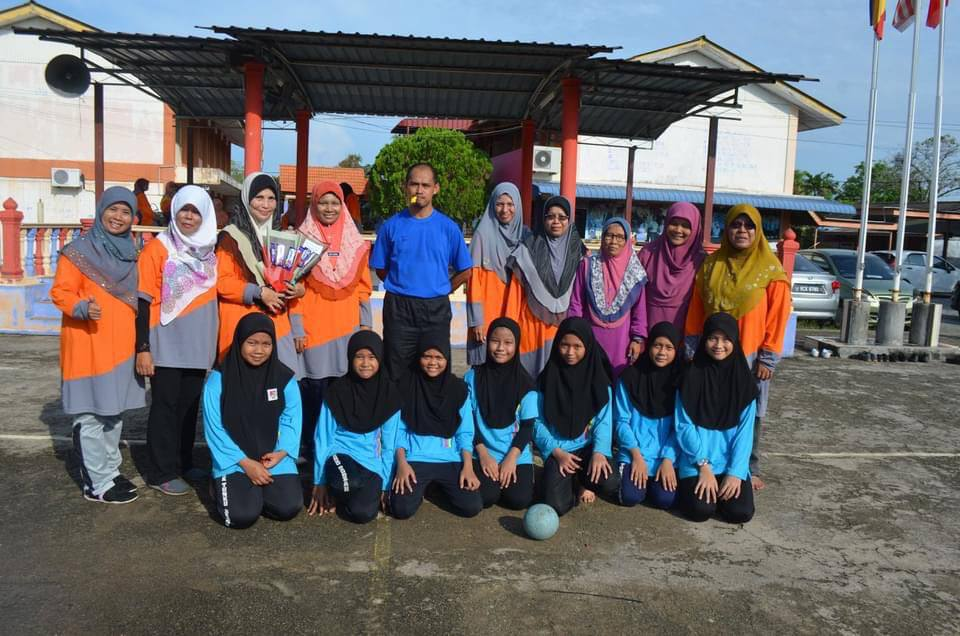
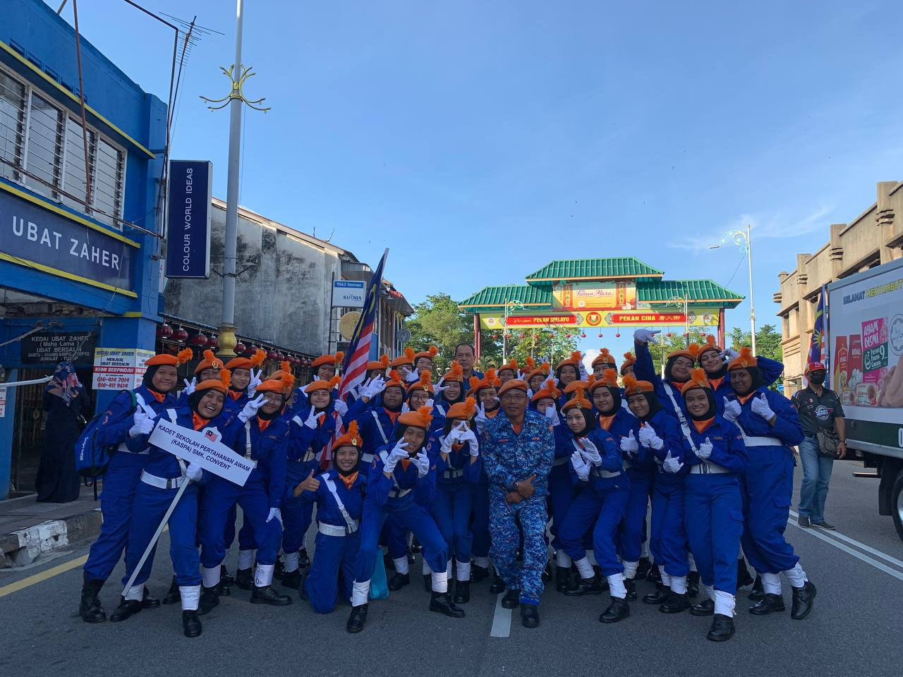
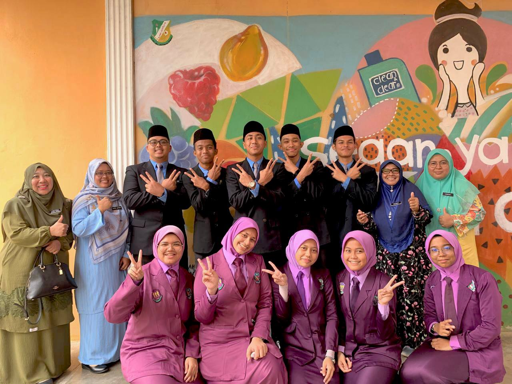
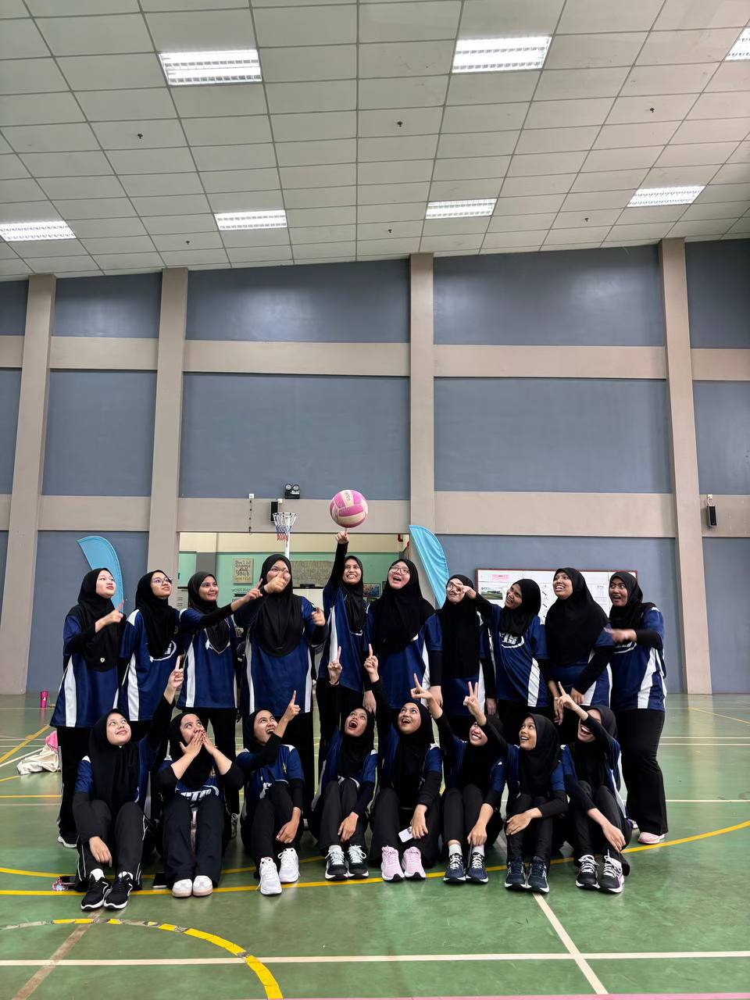
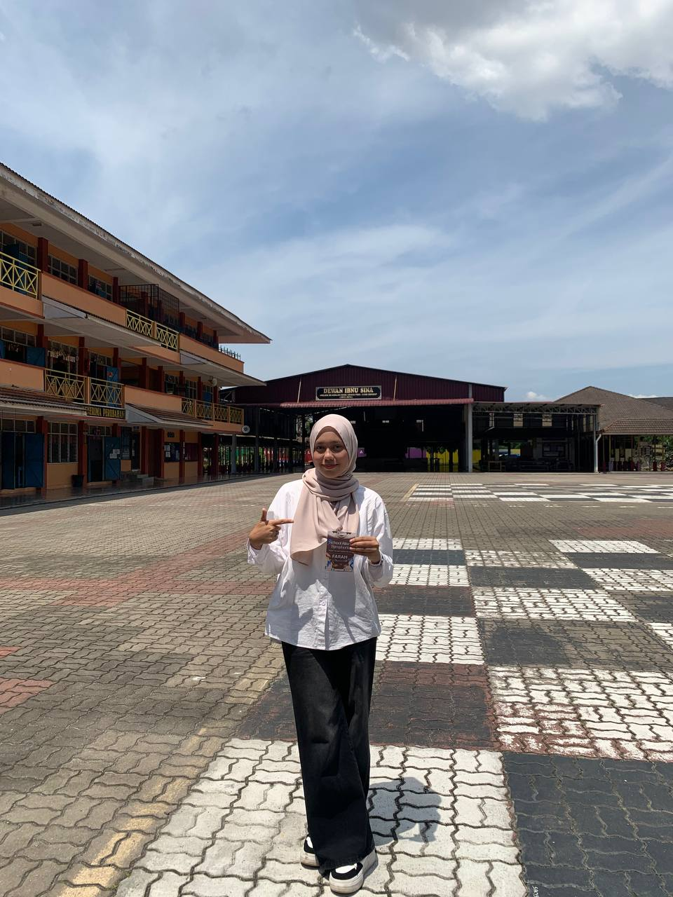

Experience 1: In 2018, I had the opportunity to represent my school in a netball competition. It was a truly meaningful and memorable experience where I learned the importance of teamwork, discipline, and effective communication. Competing with other schools helped me to build my confidence and develop both my physical and mental strength. I also learned how to stay focused under pressure and how to cooperate well with my teammates in order to achieve a common goal.

Experience 2: During the years 2022 to 2023, I participated in the Independence Marching Competition under the uniformed unit KASPA. This experience required a high level of discipline, commitment, and teamwork. We spent a lot of time practicing to achieve perfect coordination and synchronization as a team. Through this experience, I became more responsible, resilient, and confident in working within a structured group environment.

Experience 3: In 2023, I represented my school in a Bahasa Melayu debate competition held at Sekolah Menengah Kebangsaan Sultanah Bahiyah in Alor Setar. During the competition, my school, SMK Convent, represented the government side, while Sekolah Agama Darul Saadah acted as the opposition. This experience greatly enhanced my critical thinking skills, confidence, and ability to express ideas clearly and effectively in front of others.

Experience 4: During my second semester at UiTM Kedah, I represented my faculty in a netball competition for the Faculty Sports Event (SAF). Through strong teamwork, dedication, and continuous effort, my team successfully achieved second place in the competition. This experience strengthened my competitive spirit and taught me the importance of perseverance and teamwork.

Experience 5: During my second semester, I joined a volunteering program under the BRISK club known as “School Attack,” which was held at Sekolah Menengah Kebangsaan Bandar Sungai Petani (SEMEDAR). This experience allowed me to contribute to the community, interact with students, and develop a stronger sense of empathy and social responsibility. It was a very meaningful experience that gave me valuable life lessons.